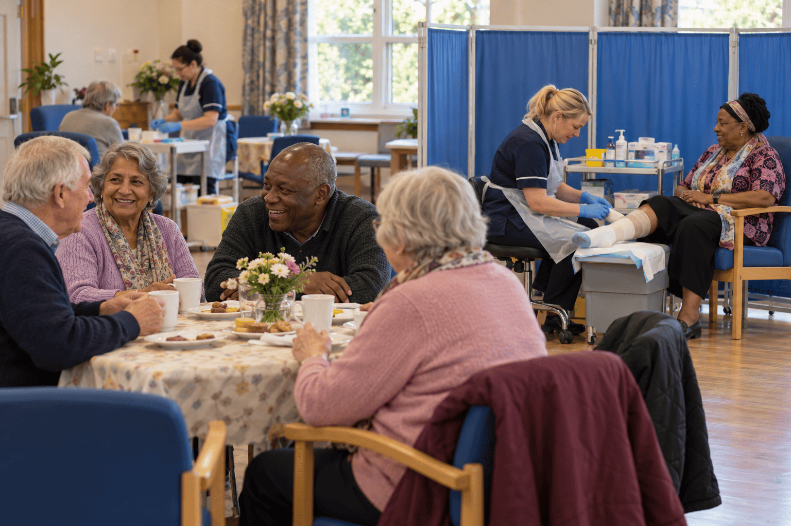
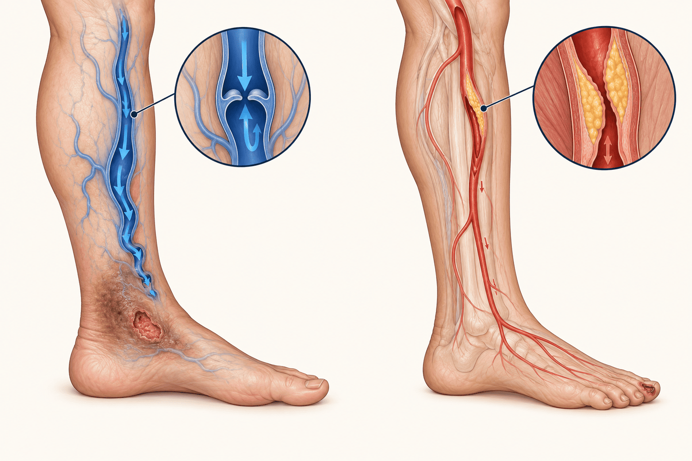

Cuidar da ferida em roda de conversa
Os Leg Clubs levam o curativo de úlceras de perna para um salão comunitário, sem hora marcada, com chá e companhia. Uma revisão sistemática1 reuniu tudo o que se publicou sobre o modelo até 2017 para responder: isso cicatriza melhor, custa menos e é seguro?
Abu Ghazaleh H, Artom M, Sturt J. A systematic review of community Leg Clubs for patients with chronic leg ulcers. Primary Health Care Research & Development. 2019;20:e65 (publicado online em 30 ago. 2018). King’s College London. doi:10.1017/S1463423618000610

Uma ferida que insiste em não fechar
Úlcera de perna é a perda de pele abaixo do joelho, na perna ou no pé, que leva mais de duas semanas para cicatrizar. Há dois tipos principais. A venosa nasce da hipertensão venosa sustentada, quando as válvulas das veias falham e o sangue se acumula. A arterial vem da falta de sangue chegando ao membro.1
No Reino Unido, cerca de 0,56% da população tem úlcera de perna, e as venosas são aproximadamente 30 vezes mais comuns que as arteriais. Mulheres e idosos são os mais atingidos. Só em 2012/2013, tratar essas úlceras custou ao NHS £1,94 bilhão.1–3
O tratamento padrão-ouro da úlcera venosa é a terapia compressiva. O ponto fraco não está na técnica, mas na adesão: dor, desconforto, orientação pobre e vínculo frágil entre paciente e profissional fazem muita gente abandonar a compressão, e isso atrasa a cicatrização e favorece a recidiva.1

[ Coloque aqui: img/ulcera-venosa-regiao-maleolar.jpg ]
Descrição esperada: foto clínica de úlcera venosa na região do maléolo medial (“área de polaina”), com pele circundante hiperpigmentada; somente com consentimento do paciente e sem identificação
[ Coloque aqui: img/avaliacao-itb-doppler.jpg ]
Descrição esperada: profissional medindo o índice tornozelo-braço com Doppler vascular portátil e esfigmomanômetro no tornozelo do paciente deitado
[ Coloque aqui: img/terapia-compressiva-bandagem-multicamadas.jpg ]
Descrição esperada: mãos de profissional aplicando bandagem compressiva multicamadas na perna, do pé até abaixo do joelho
Para aprofundar: avaliar a circulação antes de comprimir
A compressão só é segura depois de afastar doença arterial importante. O índice tornozelo-braquial (ITB) é o exame que faz essa triagem, e o PET-Saúde G10 já produziu dois materiais interativos sobre ele.
E no Brasil? Os dados populacionais ainda são escassos. O estudo clássico de Botucatu (SP), com 1.755 adultos atendidos em um centro de saúde universitário, encontrou insuficiência venosa crônica na forma grave, com úlcera ativa ou cicatrizada, em 3,6% das pessoas (2,3% dos homens e 4% das mulheres).4
A adesão também é um problema aqui. Em Unidades de Saúde da Família de Juiz de Fora (MG), 48% dos 25 usuários entrevistados tinham compressão prescrita mas não a usavam, citando dor e incômodo. Os autores apontam a falta de protocolos clínicos e de capacitação permanente na Atenção Primária.5
Nota de revisão: parte da literatura nacional cita o estudo de Botucatu com prevalência de 1,5%. O resumo original de Maffei et al. (1986) informa 3,6%, valor adotado aqui.4
O que muda quando o curativo vira encontro
O Leg Club é um modelo social de cuidado: a mesma enfermagem especializada, só que num espaço comunitário e em grupo.
Criado no Reino Unido pela enfermeira Ellie Lindsay em 1995, o modelo reúne pessoas com lesões de membros inferiores para receber tratamento de enfermeiras comunitárias treinadas. O atendimento é coletivo, o que permite conversar, comparar evoluções e dar apoio mútuo. A ideia de fundo é cuidar da perna inteira, e não só da ferida.1,6
Sem agendamento
A pessoa chega no horário de funcionamento do clube, o que dá flexibilidade de acesso.
Tratamento coletivo
O cuidado acontece em grupo, num ambiente informal como um salão de bairro.
Apoio entre pares
Membros compartilham experiências e se encorajam durante a cicatrização.
Perna saudável
Um componente de “well leg” integra prevenção e manutenção ao plano de tratamento.
O que o vídeo mostra
A animação apresenta a filosofia do modelo e como um clube é criado, administrado e mantido. Reconheça nela os quatro pilares acima: ambiente comunitário não clínico, tratamento coletivo, livre acesso e o programa de perna saudável. Observe também como o funcionamento depende de uma parceria com a comunidade local, e não só da equipe de enfermagem.
Dica: no YouTube, clique em Configurações, depois em Legendas e escolha Traduzir automaticamente para Português.
Onde os clubes existiam em 2018
Novos clubes abriram na última década, mas outros fecharam. Segundo os autores, a expansão esbarra na falta de evidência para convencer gestores a financiar o modelo.1
[ Coloque aqui: img/leg-club-sessao-comunitaria.jpg ]
Descrição esperada: foto de uma sessão de Leg Club ou de atendimento coletivo de feridas em espaço comunitário, com autorização de uso de imagem
[ Coloque aqui: img/salao-comunitario-fachada.jpg ]
Descrição esperada: fachada ou entrada de um salão comunitário, igreja ou centro de convivência onde funciona o clube, com placa ou cartaz de identificação
[ Coloque aqui: img/leg-club-conversa-entre-membros.jpg ]
Descrição esperada: membros de um grupo de cuidado de feridas conversando enquanto aguardam atendimento, com xícaras de chá sobre a mesa; rostos com autorização de uso de imagem
[ Coloque aqui: img/leg-club-voluntarios-recepcao.jpg ]
Descrição esperada: voluntários da comunidade recebendo membros na entrada ou servindo lanche no salão onde funciona o clube
Como a revisão garimpou as evidências
Os autores seguiram o protocolo PRISMA e buscaram em seis bases (Medline, Embase, PsycINFO, Cinahl, Web of Science e Cochrane Library) até março de 2017, cruzando termos de úlcera de perna com “Leg Club”. Não houve restrição de ano nem de desenho de estudo.1
Como os estudos eram muito diferentes entre si, não foi possível fazer metanálise: a síntese é narrativa. A qualidade de cada estudo foi avaliada com seis ferramentas distintas, e a confiança no conjunto das evidências com os sistemas GRADE (dados quantitativos) e CERQual (dados qualitativos).
Que tipo de estudo sustenta a revisão
11 estudos do Reino Unido e 3 da Austrália.
- 1 ensaio clínico randomizado (ECR), australiano, publicado em 4 artigos
- 7 relatos de caso
- 2 estudos de métodos mistos
- 2 estudos transversais (questionários)
- 1 estudo qualitativo
- 1 relatório de auditoria clínica
Um único ensaio randomizado, pequeno e sem poder estatístico suficiente, carrega quase todo o peso das conclusões clínicas.
O que os estudos encontraram
Os sinais são favoráveis em quase todas as frentes.1 A força desses sinais é que varia muito.
Feridas encolhem mais rápido no clube
No ECR australiano, pessoas atendidas no Leg Club tiveram redução de 69 a 77% na área média da úlcera em 12 semanas.1,12,13 No grupo que recebia visita domiciliar de enfermagem, a redução foi de 10 a 11%.
Em 24 semanas, os dois grupos melhoraram, mas a velocidade de cicatrização continuou três vezes maior no clube. Houve ainda menos eczema venoso e edema entre os membros do Leg Club.1,14
Velocidade de cicatrização (24 semanas)
Cicatrização em 6 meses, por país
ECR
auditoria, sem grupo controle
Sobre recidiva, há apenas auditorias e depoimentos sem grupo de comparação. Os autores consideram esses dados insuficientes para afirmar que o clube reduz o retorno das úlceras.1
[ Coloque aqui: img/mensuracao-area-ferida.jpg ]
Descrição esperada: enfermeira medindo a úlcera com régua descartável ou decalque em filme transparente sobre a ferida
[ Coloque aqui: img/evolucao-cicatrizacao-12-semanas.jpg ]
Descrição esperada: sequência de três fotos da mesma úlcera, padronizadas em distância e iluminação, nas semanas 0, 6 e 12
Cuidar em grupo não aumentou infecções
Era uma preocupação legítima: tratar feridas em ambiente coletivo poderia facilitar infecção. Apenas três estudos mediram o desfecho. No ECR, houve um caso de infecção no grupo de cuidado domiciliar e uma nova úlcera no grupo Leg Club. Uma auditoria de 11 meses em dois clubes britânicos (93 membros) não registrou nenhuma infecção clínica, assim como um relato de caso australiano de três anos de acompanhamento.1
Ao todo, só 127 participantes. Resultados consistentes, mas imprecisos.
Menos dor, mais sono e bom humor
Quatro estudos sugerem que o Leg Club pode melhorar qualidade de vida, capacidade funcional, moral, humor e autoestima. A redução da dor parece puxar outras melhorias, como sono e retomada da rotina de trabalho.1,14
Nem tudo mudou: no ECR, apoio social e escores de depressão não diferiram entre os grupos em 24 semanas. E embora mais da metade de 49 membros em um estudo dissesse que o clube melhorou sua vida social e bem-estar15, a evidência é fraca demais para afirmar que o convívio, por si só, acelera a cicatrização.1
Quem frequenta, recomenda
Doze estudos, a maioria relatos de caso, registraram a experiência de pelo menos 283 membros. Em qualquer país, os relatos são positivos e destacam o apoio entre pares. Comparando com os serviços do NHS, mais da metade dos membros disse preferir o clube pelo clima social e por confiar mais na orientação recebida.1
Cinco publicações relatam que os pacientes recuperaram senso de propósito e passaram a se sentir donos do próprio tratamento, algo que conversa diretamente com o problema da baixa adesão à compressão.
O que dizem as enfermeiras
Um estudo qualitativo com 15 profissionais de dois clubes britânicos.1 Temas que emergiram das falas:
O clube foi descrito como um ambiente de aprendizagem colaborativa em que pacientes e equipe crescem juntos. Para as enfermeiras, o ganho mais importante é ver o paciente assumir o próprio cuidado.
[ Coloque aqui: img/enfermeira-orientando-membro.jpg ]
Descrição esperada: enfermeira explicando a um paciente idoso, sentado, como funciona a compressão ou mostrando a evolução da ferida
Cicatrizar mais pode sair mais barato
A análise econômica do ECR australiano (67 participantes) estimou que o Leg Club custa $1.727 a menos que a visita domiciliar em três meses, com gasto 30% menor em materiais.16 O custo total para a comunidade foi 20% maior, mas como mais úlceras cicatrizaram, o custo por úlcera cicatrizada ficou menor no clube.1,16
No Reino Unido, só há uma auditoria de 11 meses: 73% dos membros tiveram custo de tratamento de cerca de £50, e 13% passaram de £200.1
Quanto dá para confiar em cada achado
A revisão classificou a certeza de cada resultado com o GRADE, em quatro níveis.1 Quanto mais cheio o medidor, mais provável que novos estudos confirmem o achado. O CERQual faz o mesmo para achados qualitativos.
| Desfecho | Direção do efeito | Confiança |
|---|---|---|
| GRADE, achados quantitativos | ||
| Cicatrização da úlcera (ECR) | Favorece o Leg Club | moderada |
| Custos e custo-efetividade | Provavelmente favorece o Leg Club | moderada |
| Qualidade de vida, dor, humor, sono | Favorece o Leg Club | baixa |
| Infecção da ferida | Sem infecções nos clubes | baixa a muito baixa |
| Convívio social ligado à cicatrização | Incerta | muito baixa |
| Experiência dos pacientes | Positiva | muito baixa |
| CERQual, achados qualitativos | ||
| Valor da interação social | Positivo | moderada |
| Percepção das enfermeiras | Positiva | moderada |
| Alta qualidade do cuidado | Positiva | baixa |
Por que a certeza caiu
Amostras pequenas
O principal motivo de rebaixamento no GRADE foi a imprecisão. O próprio ECR tinha tamanhos de amostra diferentes entre suas publicações, que os autores não conseguiram esclarecer.1
Falta de comparação
Relatos de caso, auditorias e questionários não tinham grupo controle, o que impede atribuir os resultados ao clube.
Sem cegamento
No ECR, nem participantes nem avaliadores podiam ser cegados, o que abre espaço para viés de desempenho e de detecção.
Comparador fraco
O ECR comparou o clube com visita domiciliar. A diretriz britânica já recomenda clínicas comunitárias especializadas, que seriam o comparador justo.
Contextos diferentes
A cicatrização britânica foi cerca de dois terços da australiana. Sem dados demográficos, não se sabe se a diferença vem dos pacientes, da equipe ou do serviço.
Adesão sem mecanismo
Dois estudos viram melhora na adesão ao tratamento, mas ninguém testou se ela se deve ao clube nem por qual caminho.
Um modelo promissor à espera de prova
A revisão mostra um modelo rico em resultados positivos e pobre em evidência robusta. Alguns clubes britânicos já estavam sendo contratados por grupos locais do NHS, convencidos por auditorias de economia e melhora no cuidado. Mas diretrizes como as do NICE exigem evidência de alta qualidade para recomendar um serviço.1
Os autores defendem um ECR britânico com poder estatístico adequado e comparadores apropriados, como uma clínica comunitária especializada, para medir o valor real do modelo.1
Para a prática de enfermagem. O modelo recoloca no centro dois elementos que a literatura associa à adesão: vínculo com o profissional e compreensão da própria condição. Um questionário com membros sugeriu que o clube ajuda o paciente a entender melhor sua perna, o que pode favorecer o autocuidado.1 Essa é uma hipótese a ser testada, não uma certeza.
[ Coloque aqui: img/curativo-atencao-primaria-sus.jpg ]
Descrição esperada: enfermeira da Atenção Primária realizando curativo em perna numa sala de Unidade Básica de Saúde
[ Coloque aqui: img/grupo-educacao-saude-ubs.jpg ]
Descrição esperada: roda de conversa ou grupo de educação em saúde numa Unidade Básica de Saúde, com enfermeira e usuários idosos sentados em círculo
O que veio depois desta revisão
Metassíntese qualitativa (2022). Crispin, Holloway e Galazka revisaram 25 publicações com relatos de membros e identificaram temas como apoio social, competência das enfermeiras, empoderamento pela educação, qualidade de vida e acessibilidade. Também apareceram pontos de atenção: alguns membros se incomodam ao ver as feridas dos outros, e há quem siga sem cicatrizar. As autoras sugerem oferecer biombos a quem quiser privacidade e apoio extra a quem tem feridas de difícil cicatrização.17
Revisão sobre o regime “Well Leg” (2023). McIntyre e colaboradores reuniram dados do banco de registros da rede de clubes e narrativas de uma avaliação de serviço. Os achados sugerem que permanecer no acompanhamento de perna saudável por meses após a cicatrização pode ajudar a prevenir recidivas e trazer ganhos de bem-estar.18,19
Nenhum dos dois trabalhos é ensaio randomizado: são sínteses de relatos e de dados de auditoria, e reforçam a lacuna apontada pela revisão de 2019.
[ Coloque aqui: img/meia-compressao-prevencao-recidiva.jpg ]
Descrição esperada: perna com meia de compressão elástica calçada após a cicatrização, ou profissional ajudando o paciente a vesti-la
O que fica
- Leg Clubs tratam úlceras de perna em grupo, em espaço comunitário, sem hora marcada, com foco em apoio entre pares e na saúde da perna.
- O melhor dado disponível, um ECR australiano pequeno, mostra feridas encolhendo muito mais rápido no clube do que com visita domiciliar.
- O modelo parece seguro, bem aceito e provavelmente mais barato por úlcera cicatrizada.
- A maior parte da evidência, porém, é de baixa ou muito baixa certeza: 14 estudos, apenas 1 randomizado.
- Falta um ensaio robusto, comparando o clube com o melhor cuidado especializado disponível.
Teste sua leitura
Dez questões sobre o artigo e o estudo em destaque. Escolha uma alternativa para ver a explicação.
Questão 1 de 10
Qual é o tratamento considerado padrão-ouro para a úlcera venosa?
Questão 2 de 10
O que distingue um Leg Club de um ambulatório convencional?
Questão 3 de 10
Por que os autores fizeram síntese narrativa em vez de metanálise?
Questão 4 de 10
Das 17 publicações incluídas, quantos estudos eram ensaios clínicos randomizados distintos?
Questão 5 de 10
No ECR, qual foi a redução média da área da úlcera em 12 semanas no grupo Leg Club?
Questão 6 de 10
O que a revisão conclui sobre infecção nas feridas tratadas em grupo?
Questão 7 de 10
Sobre custos, qual afirmação é correta segundo a análise australiana?
Questão 8 de 10
Qual foi o principal motivo para rebaixar a certeza das evidências no GRADE?
Questão 9 de 10
Que comparador os autores recomendam para um futuro ECR no Reino Unido?
Questão 10 de 10
No estudo de Upton et al. (2015) com membros de Leg Clubs, qual fator mais explicou as preocupações com a ferida?
Perguntas para pensar mais fundo
Perguntas socráticas não têm uma resposta certa pronta. Servem para discussão em grupo, tutoria ou estudo individual. Tente responder antes de abrir a pista.
ClarificaçãoO que exatamente é “a intervenção” num Leg Club?
Enfermagem especializada, atendimento em grupo, ausência de agendamento, voluntários, chá, prevenção após a cicatrização: tudo chega junto. Se as feridas cicatrizam mais rápido, qual desses ingredientes você apostaria que faz a diferença?
Como um estudo poderia separar o efeito de cada um? Pense em um desenho que compare o clube com uma clínica especializada individual, em que só o componente social muda.
PressupostosO que se pressupõe ao comparar o Leg Club com a visita domiciliar?
A visita domiciliar pode ser um cuidado menos especializado e menos frequente. Parte da vantagem do clube pode vir simplesmente de mais contato com enfermeiras treinadas em compressão.
O resultado de 69–77% contra 10–11% se manteria diante de uma clínica comunitária especializada? Por que os autores insistem nesse comparador?
EvidênciasQuem aparece nos relatos de caso e depoimentos, e quem fica de fora?
Sete dos 14 estudos são relatos de caso, em geral de membros com boa evolução. Quem abandonou o clube, quem não cicatrizou, quem se incomodou em tratar a ferida em público raramente é ouvido.
Que vieses isso produz? Pense em viés de seleção e em viés de publicação. Como você desenharia uma coleta que capturasse também as experiências negativas?
PerspectivasComo o mesmo ambiente coletivo pode ser acolhedor para uns e constrangedor para outros?
A metassíntese de 2022 registrou membros que se incomodavam ao ver feridas alheias.17 Úlceras podem ter odor, exsudato e carregar estigma.
Como equilibrar apoio entre pares e privacidade? Que ajustes práticos (biombos, horários, espaços separados) preservariam a proposta sem expor quem não deseja?
ImplicaçõesUm espaço coletivo na Atenção Primária mudaria a adesão à compressão no Brasil?
Em Juiz de Fora, quase metade dos usuários com compressão prescrita não a usava, por dor e incômodo.5 O Leg Club aposta em vínculo, educação e troca entre pares para enfrentar exatamente isso.
Que recursos o SUS precisaria garantir para testar o modelo numa UBS: materiais de compressão multicamadas, enfermeiras capacitadas, avaliação vascular prévia, espaço físico, voluntários? O telemonitoramento poderia complementar o acompanhamento entre encontros?
Sobre a própria decisãoImplementar agora ou esperar um ensaio robusto?
O modelo parece seguro, é bem aceito e provavelmente reduz o custo por úlcera cicatrizada, mas a certeza das evidências é baixa na maioria dos desfechos.
Que argumentos sustentam implantar um projeto-piloto com avaliação rigorosa desde o início? E quais sustentam esperar? Que desfechos você mediria para que a experiência local também gerasse evidência útil?
Referências
Numeradas na ordem em que aparecem no texto, no estilo Vancouver. Conferidas nas fontes originais em setembro de 2026. Clique no número sobrescrito no texto para ir à referência.
- 1.Abu Ghazaleh H, Artom M, Sturt J. A systematic review of community Leg Clubs for patients with chronic leg ulcers. Prim Health Care Res Dev. 2019;20:e65. doi:10.1017/S1463423618000610. PMID: 30157983. Acesso aberto: PMC8512534.
- 2.Guest JF, Ayoub N, McIlwraith T, Uchegbu I, Gerrish A, Weidlich D, et al. Health economic burden that wounds impose on the National Health Service in the UK. BMJ Open. 2015;5(12):e009283. doi:10.1136/bmjopen-2015-009283.
- 3.Guest JF, Ayoub N, McIlwraith T, Uchegbu I, Gerrish A, Weidlich D, et al. Health economic burden that different wound types impose on the UK’s National Health Service. Int Wound J. 2017;14(2):322-30. doi:10.1111/iwj.12603.
- 4.Maffei FH, Magaldi C, Pinho SZ, Lastoria S, Pinho W, Yoshida WB, et al. Varicose veins and chronic venous insufficiency in Brazil: prevalence among 1755 inhabitants of a country town. Int J Epidemiol. 1986;15(2):210-7. doi:10.1093/ije/15.2.210.
- 5.Silva MH, Jesus MCP, Merighi MAB, Oliveira DM, Santos SMR, Vicente EJD. Manejo clínico de úlceras venosas na atenção primária à saúde. Acta Paul Enferm. 2012;25(3):329-33. Disponível em: redalyc.org.
- 6.Lindsay E. The Lindsay Leg Club Model: a model for evidence-based leg ulcer management. Br J Community Nurs. 2004;9(Suppl):S15-20.
- 7.The Lindsay Leg Club Foundation. About Leg Clubs [Internet]. Suffolk: The Lindsay Leg Club Foundation; [citado 2026 set 26]. Disponível em: legclub.org/about-leg-clubs.
- 8.Lindsay E. Thirty years of celebratory achievements: May 1995 to date! Wounds UK. 2025;21(1).
- 9.The Lindsay Leg Club Foundation. The Leg Club approach [Internet]. Suffolk: The Lindsay Leg Club Foundation; [citado 2026 set 26]. Disponível em: legclub.org/the-leg-club-approach.
- 10.Lindsay E. Compliance with science: benefits of developing community leg clubs. Br J Nurs. 2001;10(Sup5):S66-S70. doi:10.12968/bjon.2001.10.Sup5.12327.
- 11.The Lindsay Leg Club Foundation. Ellie Lindsay, Trustee [Internet]. Suffolk: The Lindsay Leg Club Foundation; [citado 2026 set 26]. Disponível em: legclub.org/trustees/ellie-lindsay.
- 12.Edwards H, Courtney M, Finlayson K, Lewis C, Lindsay E, Dumble J. Improved healing rates for chronic venous leg ulcers: pilot study results from a randomized controlled trial of a community nursing intervention. Int J Nurs Pract. 2005;11(4):169-76. doi:10.1111/j.1440-172X.2005.00521.x.
- 13.Edwards H, Courtney M, Finlayson K, Lindsay E, Lewis C, Shuter P, et al. Chronic venous leg ulcers: effect of a community nursing intervention on pain and healing. Nurs Stand. 2005;19(52):47-54. doi:10.7748/ns2005.09.19.52.47.c3950.
- 14.Edwards H, Courtney M, Finlayson K, Shuter P, Lindsay E. A randomised controlled trial of a community nursing intervention: improved quality of life and healing for clients with chronic leg ulcers. J Clin Nurs. 2009;18(11):1541-9. doi:10.1111/j.1365-2702.2008.02648.x.
- 15.Upton D, Upton P, Alexander R. Contribution of the Leg Club model of care to the well-being of people living with chronic wounds. J Wound Care. 2015;24(9):397-405. doi:10.12968/jowc.2015.24.9.397. Texto completo: legclub.org (PDF).
- 16.Gordon L, Edwards H, Courtney M, Finlayson K, Shuter P, Lindsay E. A cost-effectiveness analysis of two community models of care for patients with venous leg ulcers. J Wound Care. 2006;15(8):348-53. doi:10.12968/jowc.2006.15.8.26942.
- 17.Crispin FJ, Holloway S, Galazka AM. Members’ experiences of Lindsay Leg Clubs®: a thematic metasynthesis of published narratives in qualitative research. J Wound Manag. 2022;23(3). doi:10.35279/jowm2022.23.03.03.
- 18.McIntyre N, Finlayson K, Galazka A, Lindsay E, Renyi R. The Lindsay Leg Club® Well Leg Regime: an evidence review. J Wound Care. 2023;32(10):642-50. doi:10.12968/jowc.2023.32.10.642.
- 19.McIntyre N, Galazka AM, Lindsay E, Bawden R, Renyi R. A relational database within the Leg Club Network: an audit. Int Wound J. 2021;18(2):233-41. doi:10.1111/iwj.13522.
Vídeos citados
- Ankle Brachial Index (ABI) Test: How to Perform. Stanford Medicine 25. YouTube. Disponível em: youtube.com/watch?v=KnJDrmfIXGw.
- The Leg Club Journey. The Leg Club Channel. YouTube. Disponível em: youtube.com/watch?v=RgR4nZWVZs0.
- Leg Club Animation: the philosophy, creation, management and maintenance of Leg Clubs. The Leg Club Channel. YouTube. Disponível em: youtube.com/watch?v=-taTPCd4jPM.
- Living with a chronic wound: the Leg Club model of care. The Leg Club Channel. YouTube. Disponível em: youtube.com/watch?v=nOHmZg7dSbw.
Materiais do PET-Saúde Digital G10 (UFPel)
- ITB Interactive: plataforma interativa de aprendizado do índice tornozelo-braquial. Disponível em: itb-eight.vercel.app.
- ITB Simulador: infográfico e simulador do índice tornozelo-braquial. Disponível em: petg10ufpel.github.io.
- Por que as meias de compressão têm pressões diferentes? Infográfico científico. Disponível em: petg10ufpel.github.io.